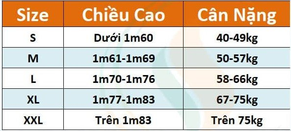

CHỌN SIZE ÁO BÓNG ĐÁ
Việc chọn size áo rất quan trọng, các bạn nên đọc kỹ các thông số DREAMSHOP đưa ra dưới đây trước để chọn cho mình 1 size áo bóng đá phù hợp:

Lưu ý:
Khi chọn size áo bóng đá, các bạn có thể chọn thay đổi một chút để phù hợp với cơ thể bạn hơn, ví dụ: bạn cao 1m72 nhưng chỉ nặng 59kg, mặc size M sẽ vừa chiều ngang nhưng sẽ ngắn chiều dài, khi mặc sẽ thấy không được đẹp, vậy các bạn có thể chọn size L, rộng một chút nhưng có thể bóp lại được, còn nếu lấy M, bị ngắn là thua, không sửa được.